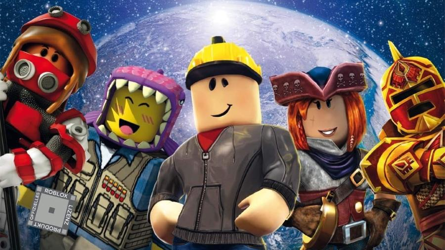

ROBLOX-
O QUE É ROBLOX?
o JOGO DA ATUALIDADE
Roblox
O Roblox é uma plataforma de jogos online que permite que os usuários criem, compartilhem e joguem uma ampla variedade de jogos criados pela comunidade.
Lançado em 2006 pela empresa Roblox Corporation, o Roblox tornou-se um fenômeno global, especialmente entre crianças e adolescentes.
Ele combina elementos de construção, programação e jogabilidade, proporcionando aos usuários a oportunidade de criar mundos virtuais únicos e interagir com outros jogadores.
A principal característica do Roblox é o seu ambiente de desenvolvimento, conhecido como Roblox Studio, que permite aos usuários criar jogos e experiências interativas.
É relativamente acessível para iniciantes, já que utiliza uma linguagem de programação visual chamada Lua, que facilita a criação de scripts e comportamentos para objetos no jogo.
Isso incentiva a aprendizagem de programação de forma lúdica e interativa.
Os jogos do Roblox são variados, indo desde aventuras de ação e quebra-cabeças até simuladores e mundos sociais.
A diversidade de jogos é impressionante, e os jogadores podem encontrar algo que atenda aos seus gostos e preferências.
Além disso, muitos jogos no Roblox oferecem a possibilidade de personalizar avatares, desbloquear itens e até mesmo criar seus próprios modelos 3D.